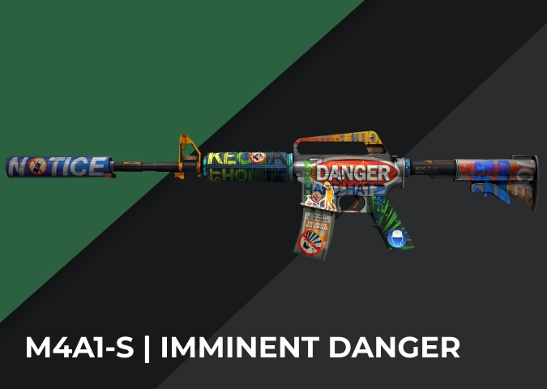

TUS ARTÍCULOS BAJO UNA NUEVA LUZ
Tráete todo tu inventario de CS:GO a Counter‑Strike 2. No solo conservarás todos los artículos que has ido coleccionando a lo largo de los años, sino que estos se verán aún mejor con la iluminación y los materiales de Source 2. Además de ser compatibles con los modelos y acabados clásicos, todas las armas de serie se han mejorado con modelos de alta resolución, y algunos acabados de arma aprovechan estos nuevos modelos.


